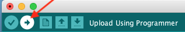

uploaden Firmware naar ESP8266
De ESP01 heeft geen ingebouwde flash logica. Om toch aan de ESP01 duidelijk te maken dat je er firmware naar toe wilt sturen (flashen) moet je de ESP01 bij het opstarten in deze flash mode zetten door een paar GPIO-pinnen Hoog (3v3) of juist Laag (GND) te maken.
Hier staat beschreven hoe je dat kunt doen.
Als de ESP01 eenmaal in flash mode staat kun je de firmware er eenvoudig naartoe sturen door op deze  knop te klikken.
Sluit de ESP01 aan op je computer en zet deze in flash mode dmv een ESP programmer
of FTDI adapter.
Meer informatie hierover kun je hier vinden.
Gebruik deze instellingen:
- Board: "Generic ESP8266 Module"
- Flash mode: "DOUT"
- Flash size: "1M (128K SPIFFS)"
- Debug port: "Disabled"
- Debug Level: "None"
- IwIP Variant: "v2 Lower Memory"
- Reset Method: "nodemcu" // <-- op basis van de programmer die je gebruikt
- Crystal Frequency: "26 MHz"
- Flash Frequency: "40MHz"
- CPU Frequency: "80 MHz"
- Buildin Led: "1" // GPIO01 - Pin 2
- Upload Speed: "115200"
- Erase Flash: "Only Sketch"
- Port: "Serial Port > COMx" // <- de poort waar je programmer op zit
uploaden Data map
nog doen!!!
WiFi
Haal de ESP01 van de programmer/breadboard af en stop hem in de socket van de logger. Sluit de logger aan op de P1 poort van de "slimme meter". Hij zal gaan booten en maakt zijn eigen accesspoint. Dit kun je zien aan het blauwe lampje wat zal gaan knipperen.
Via je computer/mobiel, bekijk de Wifi netwerken, hier zul je een
ESP01‑DSMR‑xx‑<IPaddress> tussen zien staan: connect.
Zodra je verbonden bent, open de browser en ga naar ip adres wat de naam van het
accesspoint staat bijv 192.168.5.1
- Klik op
Configure WiFi - Selecteer je eigen accesspoint
- Typ het password
- Klik save
De logger zal rebooten en connectie maken met je accesspoint.
Tijdens het opstarten kun je aan de blauwe led zien wat de DSMR-logger aan het doen is:
- 3 x langzaam knipperen – initiële start
- 5 x snel knipperen – verbinding gemaakt met WiFi netwerk
Daarna knippert de blauwe led iedere keer als er een nieuw telegram verwerkt wordt.
Als de led, na de eerste drie keer langzaam knipperen blijft branden, dan kon de DSMR-logger geen verbinding met jouw WiFi netwerk maken en start hij weer zijn eigen AP op en zal je WiFi procedure opnieuw moeten doen.
Zodra hij geconnecteerd is open een browser en ga naar:
Zodra hij geconnecteerd is open een browser en ga naar:
http://ESP01-DSMR.local/ of http://<ip adres van de ESP>
In de browser zul je nu FileNotFound zien, dat is een goed teken. Nu kunnen we
software via Arduino "over the air" uploaden.
Je kunt ook telnet <IP adres> gebruiken, hier zie je direct de data van de logger
langs komen. Meteen ook een teken of het goed werkt.
Om te bepalen welk IP is uitgegeven aan de ESP door de DHCP server, kun je in je router
kijken, of met bijv de Fing app of met nmap.